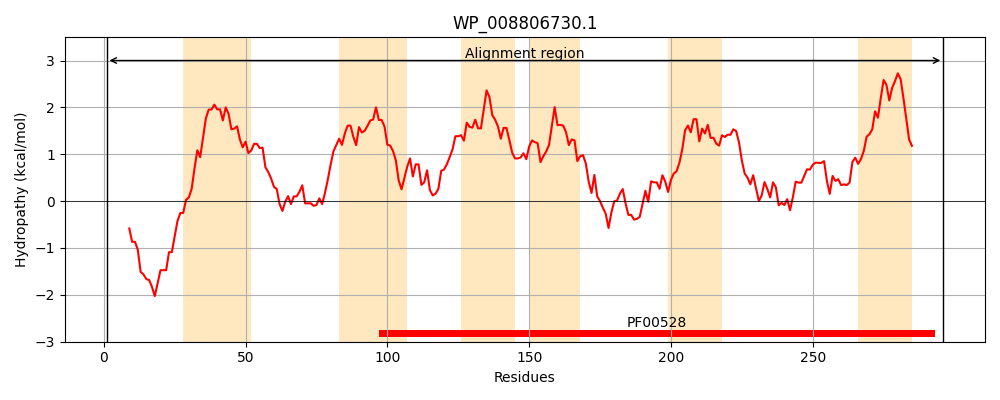
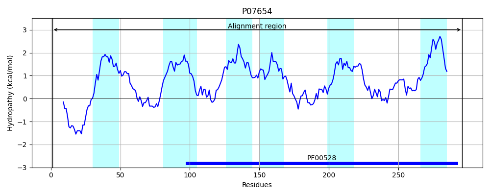
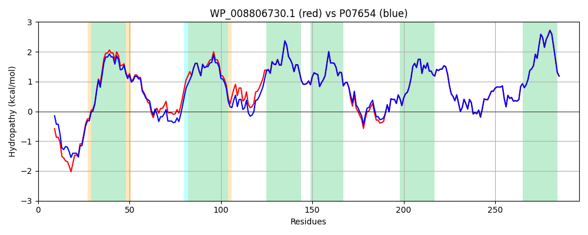

Hit Accession: P07654
Hit TCID: 3.A.1.7.1
Hit Description: gnl|BL_ORD_ID|8426 gnl|TC-DB|P07654|3.A.1.7.1 Phosphate transport system permease protein pstA - Escherichia coli.
Mach Len: 296
e:0.000000
Query TMS Count : 6
Hit TMS Count: 6
TMS-Overlap Score: 6.100000
Predicted Substrates:CHEBI:7793;phosphate(3-)
BLAST Alignment:
Score: 1400 , Bit scores: 543 bits, E-value: 0.0e+00, Alignment length: 296, Percentage identity: 94
Query: 1 MATIELQTSTELAESRRKMQAKRRMKNRIALALSMATMAFGLFWLIWILMATITRGFDGMSLALFTEMTPPPNTAGGGLANALAGSGLLILWATVFGTPLGILAGIYLAEYGRKSVLAEIIRFINDILLSAPSIVVGLFVYTIVVAQMQHFSGWAGVIALALLQVPIVIRTTENMLKLVPDSLREAAYALGTPKWKMISAITLKASVSGIMTGILLAIARIAGETAPLLFTALSNQFWSTDMMQPIANLPVTIFKFAMSPFAEWQQLAWAGVLIITLCVLLLNILARVIFAKKKHG 296
MA +E+QT+ LAESRRKMQA+RR+KNRIAL LSMATMAFGLFWLIWILM+TITRG DGMSLALFTEMTPPPNT GGGLANALAGSGLLILWATVFGTPLGI+AGIYLAEYGRKS LAE+IRFINDILLSAPSIVVGLFVYTIVVAQM+HFSGWAGVIALALLQVPIVIRTTENMLKLVP SLREAAYALGTPKWKMISAITLKASVSGIMTGILLAIARIAGETAPLLFTALSNQFWSTDMMQPIANLPVTIFKFAMSPFAEWQQLAWAGVLIITLCVLLLNILARV+FAK KHG
Sbjct: 1 MAMVEMQTTAALAESRRKMQARRRLKNRIALTLSMATMAFGLFWLIWILMSTITRGIDGMSLALFTEMTPPPNTEGGGLANALAGSGLLILWATVFGTPLGIMAGIYLAEYGRKSWLAEVIRFINDILLSAPSIVVGLFVYTIVVAQMEHFSGWAGVIALALLQVPIVIRTTENMLKLVPYSLREAAYALGTPKWKMISAITLKASVSGIMTGILLAIARIAGETAPLLFTALSNQFWSTDMMQPIANLPVTIFKFAMSPFAEWQQLAWAGVLIITLCVLLLNILARVVFAKNKHG 296 | Protein Hydropathy Plots: |
|---|
|  |  |
Pairwise Alignment-Hydropathy Plot:
|
|---|
|  |